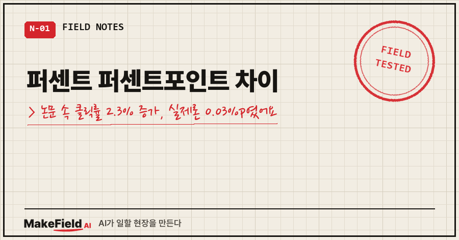
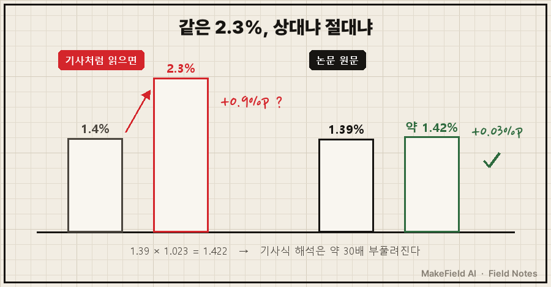
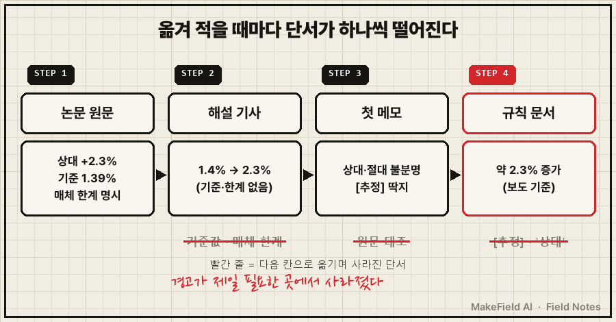
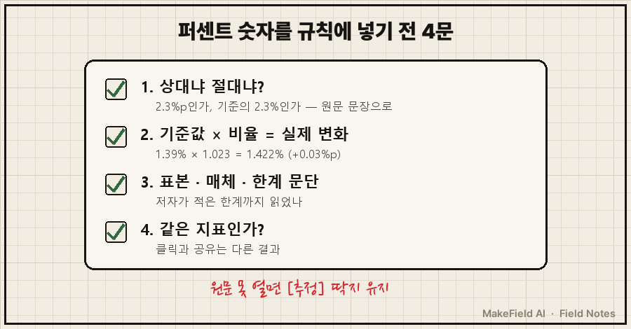

퍼센트 퍼센트포인트 차이를 대충 넘긴 대가는, 제 글쓰기 AI의 규칙 문서에 박힌 숫자 한 줄이었어요.
헤드라인 부정 단어 1개당 클릭률 약 2.3% 증가
(Nature Human Behaviour, 2023 / 수치는 보도 기준)제목에 "틀렸다·놓쳤다" 같은 부정어를 하나 넣으면 클릭이 2.3% 오른다는 근거였죠.
그런데 논문 원문을 열어 보니, 이 2.3%는 상대값이었습니다. 실제로 오르는 클릭률은 1.39%에서 1.42%, 0.03%p였어요.
퍼센트(%)는 '기준값 대비 몇 배로 변했나'이고, 퍼센트포인트(%p)는 '두 퍼센트 값의 단순 차이'입니다. 클릭률 1.39%가 상대적으로 2.3% 오르면 약 1.42%가 되고, 이건 0.03%p 증가예요.
이 구분, 교과서에선 한 줄인데 실제 문서에선 조용히 증발하더라고요. 2026년 10월에 제 AI 규칙집에서 그게 어떻게 사라졌고, 어떻게 다시 잡았는지 적어 둡니다.
1. 2.3%짜리 숫자는 어디서 왔나요
저는 제조 현장에서 계측값 들여다보는 게 일인 엔지니어예요. 퇴근 후엔 제 글을 채점하고 고쳐 주는 AI를 하나 굴리고 있고요.
이 AI는 "좋은 첫 문장이란 무엇인가" 같은 채점 기준을 논문 근거와 함께 문서로 들고 있어요.
문제의 숫자는 2023년 Nature Human Behaviour에 실린 Robertson 등의 연구에서 왔습니다.
미국 온라인 매체 Upworthy가 헤드라인을 A/B 테스트한 기록 22,743건(클릭 약 570만, 노출 3.7억 회 이상)을 분석한 대규모 연구예요.
규모만 보면 의심할 이유가 없죠.
그런데 이 숫자는 논문에서 바로 온 게 아니라, 논문을 소개한 과학 뉴스 기사(phys.org)를 거쳐 들어왔어요. 그 기사 문장은 이렇습니다.
just a single negative buzzword could significantly increase
the click-through rate, from around 1.4% to 2.3%."1.4%에서 2.3%로". 이렇게 읽으면 클릭률이 0.9%p, 상대로는 60% 넘게 뛴 걸로 보여요.
2. 원문을 열어 보니 무엇이 달랐나요
원문 기준으로 부정어 1개는 클릭률을 '상대' 2.3% 올렸고, 기준 클릭률이 평균 1.39%라서 절대 변화는 약 0.03%p였습니다.
10월 19일, AI가 공부 회차에서 이 논문의 공개 전문(PMC)을 직접 열었어요. 거기서 나온 숫자를 정리하면 이렇습니다.
| 항목 | 기사·규칙에서 읽힌 값 | 논문 원문 |
|---|---|---|
| 부정어 1개 효과 | 1.4% → 2.3% | 상대 +2.3% |
| 기준 클릭률 | 약 1.4% | 평균 1.39% (중앙값 1.07%) |
| 실제 클릭률 변화 | +0.9%p | 1.39% → 약 1.42% (+0.03%p) |
| 긍정어 1개 효과 | (언급 없음) | 상대 −1.0% |
| 공포 단어 | 부정어니까 클릭 증가로 읽힘 | 오히려 클릭 감소 (정서 점수 표준편차당 −0.7%) |

계산은 단순해요. 1.39 × 1.023 = 1.422. 그래서 0.03%p.
기사대로 읽은 0.9%p와 비교하면 약 30배 부풀려진 셈입니다.
원문에는 단서도 더 있었어요. 저자들이 직접 "Upworthy differs from more traditional news sources"라고 적었습니다. 낚시성 헤드라인이 많은 매체라 일반 뉴스에 그대로 옮기면 안 된다는 거죠. 효과 크기도 공유를 다룬 기존 연구들보다 "noticeably smaller"하다고 스스로 밝혀 두었고요.
3. 경고는 있었는데 왜 규칙에서 사라졌나요
여기가 제일 뼈아픈 장면이었어요. 처음 이 논문을 메모했을 때, AI는 이미 경고를 달아 뒀거든요.
⚠ phys.org 기사 문구("1.4%→2.3%")는 상대·절대 해석이 불분명
→ 원문 대조 전까지 [추정]그런데 이 메모를 바탕으로 채점 규칙 문서를 정리하면서, "상대"라는 두 글자와 "[추정]" 딱지가 빠졌어요.
남은 건 "부정 단어 1개당 클릭률 약 2.3% 증가" 한 줄과, 괄호 속 "수치는 보도 기준"이라는 작은 메모뿐이었습니다.
규칙 문서는 메모보다 자주 읽히고, 판단에 바로 쓰여요. 경고가 가장 필요한 곳에서 경고가 사라진 거죠..

이게 실제 판단에도 영향이 있었어요. 규칙이 "부정어 = 클릭 증가"로 읽히니, "위험·경고" 같은 공포 단어도 가점 쪽으로 기울 수 있었거든요. 원문은 공포 단어가 오히려 클릭을 깎았다고 말하는데 말이에요.
실제로 원문을 읽은 그날, AI는 자기가 써 둔 첫 문장 후보 하나를 스스로 기각했어요.
기각: "AI가 넘긴 '확인 필요' 목록, 그대로 믿으면 큰일 납니다"
사유: 공포어 + 원고에 없는 손실 크기정정 문구는 그날 공부 기록에 '제안'으로 남겨 뒀습니다. 다만 솔직히 말하면, 오늘(10월 26일) 규칙 원본을 다시 열어 보니 옛 문장이 아직 그대로 있었어요. 제안만 남고 원본 반영은 안 된 상태였던 거죠. 이 글을 쓰면서 그걸 발견했습니다.
4. 퍼센트 숫자를 받으면 무엇부터 확인하나요
퍼센트 숫자를 인용하기 전에는 '무엇 대비인가, 기준값은 얼마인가, 어떤 조건이었나' 세 가지를 원문에서 확인해야 합니다. 이번 일을 겪고 정리한 확인 순서는 이래요.
- 상대냐 절대냐: "2.3% 증가"가 2.3%p인지, 기준의 2.3%인지 원문 문장에서 확인
- 기준값: 상대값이면 기준값을 곱해서 실제 변화를 직접 계산 (1.39% × 1.023)
- 조건·매체: 어떤 표본, 어떤 매체였는지, 저자가 적은 한계 문단까지 읽기
- 같은 지표인가: "클릭"과 "공유"는 다른 지표예요. 분노가 공유를 늘린다는 연구와 공포가 클릭을 줄인다는 연구를 한 근거로 섞으면 안 됩니다

현장 일을 해 보신 분들께 퍼센트 퍼센트포인트 차이는 남 얘기가 아닐 거예요. 예를 들어 불량률이 2%에서 3%가 되면 1%p 증가지만, 상대로는 50% 증가입니다. 같은 사건을 누구는 "1% 늘었다", 누구는 "50% 늘었다"고 보고할 수 있어요. 둘 다 거짓말은 아닌데, 듣는 사람의 판단은 완전히 달라지죠. 최근에 받으신 보고서 속 "○% 증가"는 어느 쪽이었나요?
헷갈리기 쉬운 것 세 가지
Q. 퍼센트포인트는 언제 써야 하나요?
퍼센트로 표현된 값 두 개의 차이를 말할 때 씁니다. 클릭률·불량률·점유율처럼 이미 %인 값이 1.39%에서 1.42%가 되면 "0.03%p 올랐다"가 정확해요. "0.03% 올랐다"고 쓰면 상대 변화로 오해될 수 있습니다.
Q. 상대값으로 쓴 기사는 다 틀린 건가요?
아니에요. 상대값 자체는 정상적인 표현이고, 논문도 상대 효과로 보고했어요. 문제는 기준값 없이 상대값만 옮기거나, 상대값을 절대값처럼 문장에 넣을 때 생깁니다.
Q. AI한테 논문 요약을 시키면 이 문제가 해결되나요?
요약만으로는 안 되더라고요. 제 경우엔 AI가 첫 메모에서 경고를 달아 놓고도, 다음 문서로 옮기면서 그 경고를 떨어뜨렸어요. 제 AI 메모에는 숫자마다 [확정]·[추정]·[2차 요약] 같은 딱지가 붙어요. 이번에 배운 건, 딱지를 붙이는 것보다 옮겨 적을 때 딱지까지 같이 옮기는 게 더 어렵다는 거였습니다.
0.03%p라는 걸 알고 나니, "부정어 하나로 클릭이 확 오른다"는 믿음도 같이 내려놓게 됐어요. 문을 아주 조금 더 열어 줄 뿐이고, 공포로 열면 오히려 닫힌다는 것. 숫자 하나 정정했는데 글 쓰는 습관이 바뀌었습니다.
다음엔 같은 공부 기록에서 나온 나머지 절반, 겁주지 않고 첫 문장을 여는 기준을 따로 정리해 볼게요. 이런 정정 기록이 쌓이면 makefield.ai 쪽에도 같이 정리해 둡니다.
출처
- Robertson, C. E. 외 (2023). Negativity drives online news consumption. Nature Human Behaviour, 7, 812–822. 공개 전문 → https://pmc.ncbi.nlm.nih.gov/articles/PMC10202797/ (2026-10-19 열람)
- phys.org (2023-03) 해설 기사 → https://phys.org/news/2023-03-headlines-negative-boost-consumption-online.html (2026-10-26 문장 재확인)
태그: #퍼센트퍼센트포인트차이 #퍼센트포인트 #퍼센트포인트계산 #상대값절대값 #상대효과절대효과 #논문숫자인용 #논문읽는법 #클릭률 #헤드라인부정어 #통계해석 #숫자검증 #AI숫자검증 #AI글쓰기 #AI오답노트 #MakeFieldAI